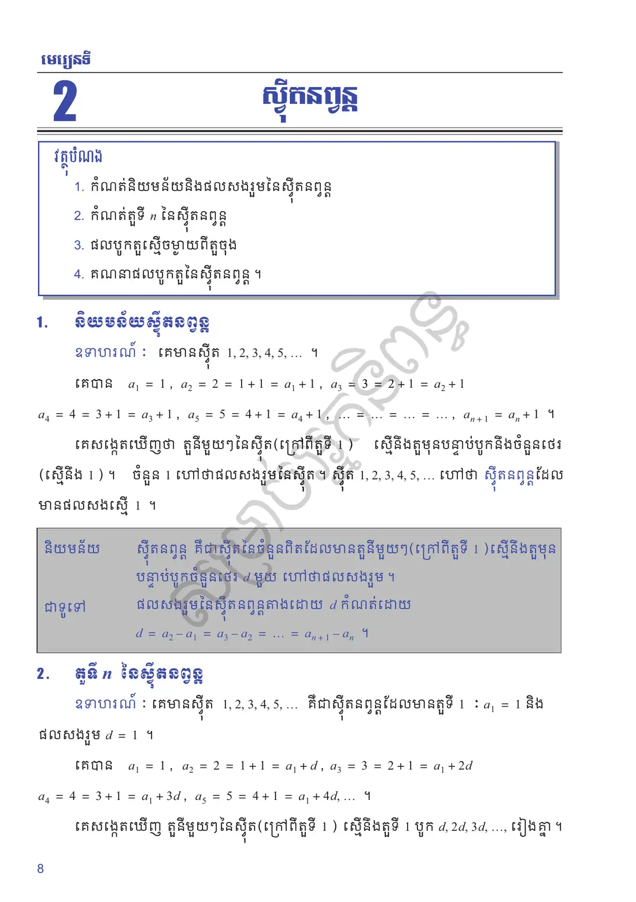
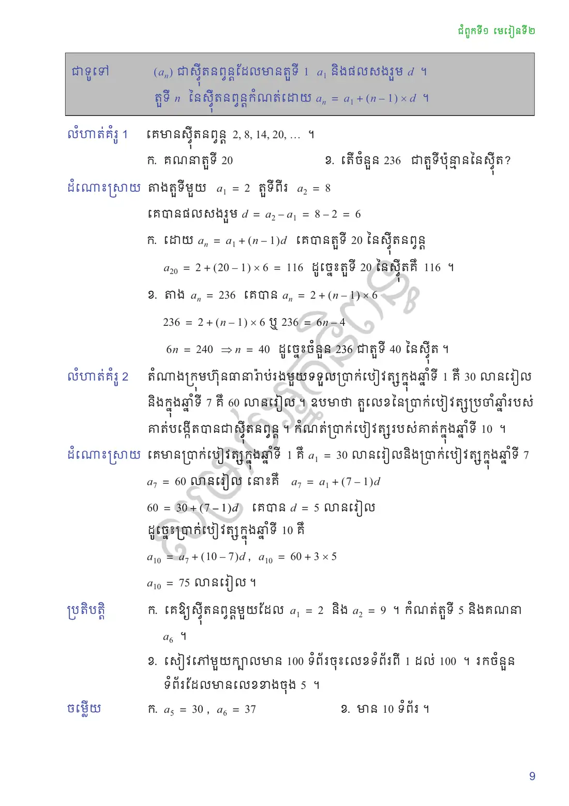
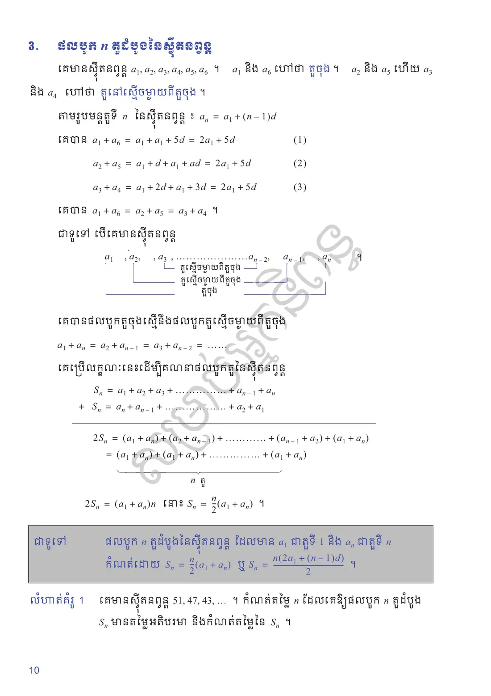
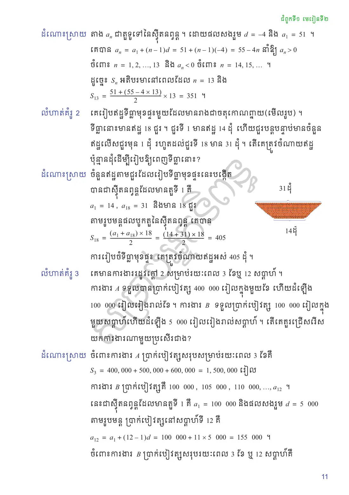
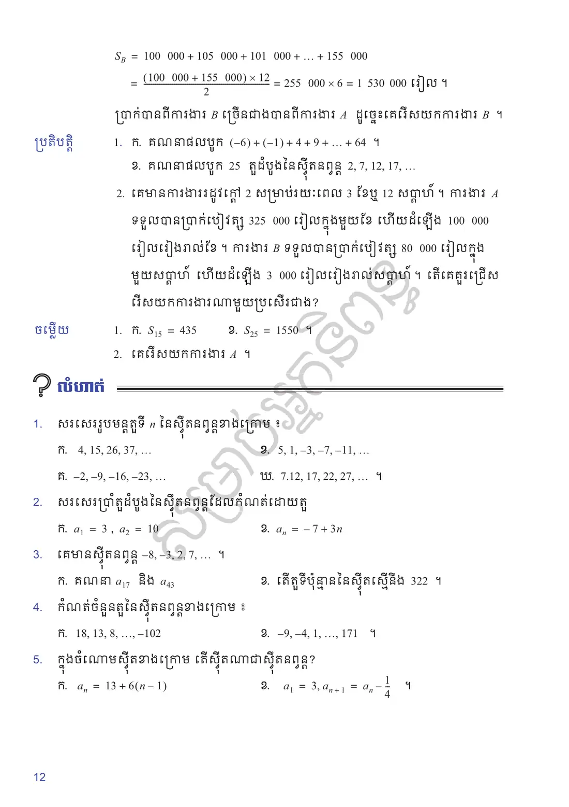
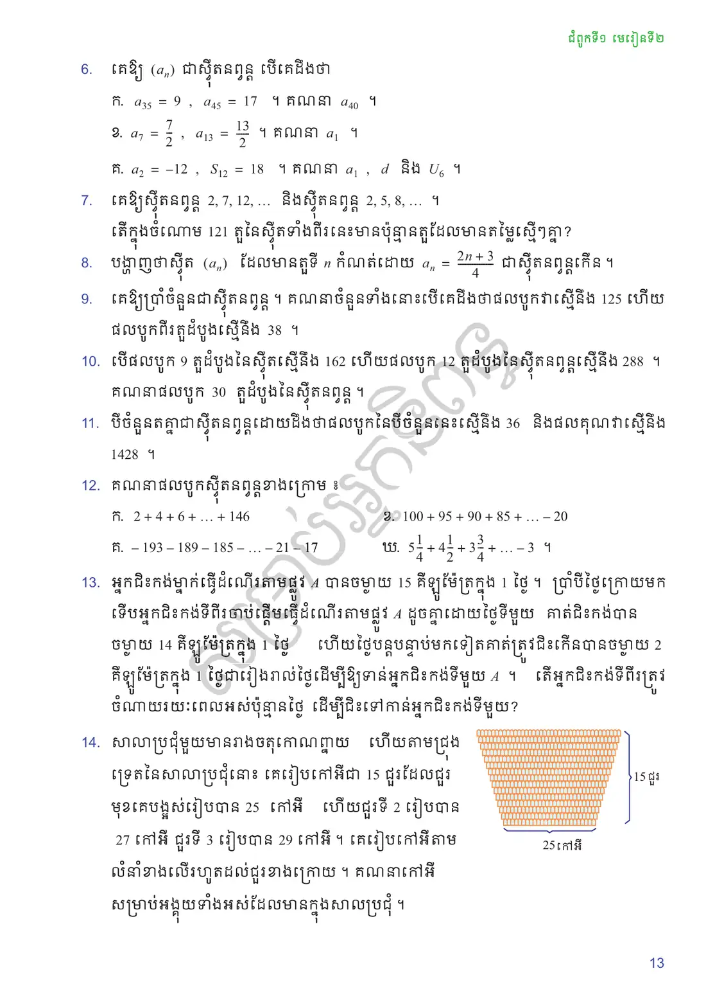

កំណត់និយមន័យនិងផលសងរួមនៃស៊ីតនព្វន្ត
កំណត់តួទី \(n\) នៃស៊ីតនព្វន្ត
ផលបូកតួស្មើចម្ងាយពីតួចុង
គណនាផលបូកតួនៃស៊ីតនព្វន្ត ។
និយមន័យស៊ីតនព្វន្ត
គេមានស៊ីត \(1, 2, 3, 4, 5, \ldots\) ។ គេបាន
ស៊ីតនព្វន្ត គឺជាស៊ីតនៃចំនួនពិតដែលមានតួនីមួយៗ (ក្រៅពីតួទី \(1\)) ស្មើនឹងតួមុនបន្ទាប់បូកចំនួនថេរ \(d\) មួយ ហៅថាផលសងរួម ។
ផលសងរួមនៃស៊ីតនព្វន្តតាងដោយ \(d\) កំណត់ដោយ
តួទី \(n\) នៃស៊ីតនព្វន្ត
គេមានស៊ីត \(1, 2, 3, 4, 5, \ldots\) គឺជាស៊ីតនព្វន្តដែលមានតួទី \(1\) ៖ \(a_1 = 1\) និងផលសងរួម \(d = 1\) ។ គេបាន
\((a_n)\) ជាស៊ីតនព្វន្តដែលមានតួទី \(1\) \(a_1\) និងផលសងរួម \(d\) ។ តួទី \(n\) នៃស៊ីតនព្វន្តកំណត់ដោយ
គេមានស៊ីតនព្វន្ត \(2, 8, 14, 20, \ldots\) ។
គណនាតួទី \(20\)
តើចំនួន \(236\) ជាតួទីប៉ុន្មាននៃស៊ីត?
តាងតួទីមួយ \(a_1 = 2\) តួទីពីរ \(a_2 = 8\) ។ គេបានផលសងរួម \(d = a_2 - a_1 = 8 - 2 = 6\) ។
ដោយ \(a_n = a_1 + (n - 1)d\) គេបានតួទី \(20\) នៃស៊ីតនព្វន្ត
\[a_{20} = 2 + (20 - 1) \times 6 = 116\]ដូច្នេះតួទី \(20\) នៃស៊ីតគឺ \(116\) ។តាង \(a_n = 236\) គេបាន \(a_n = 2 + (n - 1) \times 6\)
\[\begin{gathered} \begin{aligned} 236 &= 2 + (n - 1) \times 6 \iff 236 = 6n - 4\\ \iff 6n\\ &= 240 \Rightarrow n = 40 \end{aligned} \end{gathered}\]ដូច្នេះចំនួន \(236\) ជាតួទី \(40\) នៃស៊ីត ។
តំណាងក្រុមហ៊ុនធានារ៉ាប់រងមួយទទួលប្រាក់បៀវត្សក្នុងឆ្នាំទី \(1\) គឺ \(30\) លានរៀល និងក្នុងឆ្នាំទី \(7\) គឺ \(60\) លានរៀល ។ ឧបមាថា តួលេខនៃប្រាក់បៀវត្សប្រចាំឆ្នាំរបស់គាត់បង្កើតបានជាស៊ីតនព្វន្ត ។ កំណត់ប្រាក់បៀវត្សរបស់គាត់ក្នុងឆ្នាំទី \(10\) ។
គេមានប្រាក់បៀវត្សក្នុងឆ្នាំទី \(1\) គឺ \(a_1 = 30\) លានរៀល និងប្រាក់បៀវត្សក្នុងឆ្នាំទី \(7\) \(a_7 = 60\) លានរៀល នោះគឺ \(a_7 = a_1 + (7 - 1)d\)
គេឱ្យស៊ីតនព្វន្តមួយដែល \(a_1 = 2\) និង \(a_2 = 9\) ។ កំណត់តួទី \(5\) និងគណនា \(a_6\) ។
សៀវភៅមួយក្បាលមាន \(100\) ទំព័រចុះលេខទំព័រពី \(1\) ដល់ \(100\) ។ រកចំនួនទំព័រដែលមានលេខខាងចុង \(5\) ។
មើលចម្លើយ
\(a_5 = 30\), \(a_6 = 37\)
មាន \(10\) ទំព័រ ។
ផលបូក \(n\) តួដំបូងនៃស៊ីតនព្វន្ត
គេមានស៊ីតនព្វន្ត \(a_1, a_2, a_3, a_4, a_5, a_6\) ។ \(a_1\) និង \(a_6\) ហៅថា តួចុង ។ \(a_2\) និង \(a_5\) ហើយ \(a_3\) និង \(a_4\) ហៅថា តួនៅស្មើចម្ងាយពីតួចុង ។
តាមរូបមន្តតួទី \(n\) នៃស៊ីតនព្វន្ត ៖ \(a_n = a_1 + (n - 1)d\) គេបាន
ជាទូទៅ បើគេមានស៊ីតនព្វន្ត \(a_1, a_2, a_3, \ldots, a_{n-2}, a_{n-1}, a_n\) គេបានផលបូកតួចុងស្មើនឹងផលបូកតួស្មើចម្ងាយពីតួចុង
ផលបូក \(n\) តួដំបូងនៃស៊ីតនព្វន្ត ដែលមាន \(a_1\) ជាតួទី \(1\) និង \(a_n\) ជាតួទី \(n\) កំណត់ដោយ
គេមានស៊ីតនព្វន្ត \(51, 47, 43, \ldots\) ។ កំណត់តម្លៃ \(n\) ដែលគេឱ្យផលបូក \(n\) តួដំបូង \(S_n\) មានតម្លៃអតិបរមា និងកំណត់តម្លៃនៃ \(S_n\) ។
តាង \(a_n\) ជាតួទូទៅនៃស៊ីតនព្វន្ត ។ ដោយផលសងរួម \(d = -4\) និង \(a_1 = 51\) ។ គេបាន
ដូច្នេះ \(S_n\) អតិបរមានៅពេលដែល \(n = 13\) និង
គេរៀបឥដ្ឋទីធ្លាមុខផ្ទះមួយដែលមានរាងជាចតុកោណព្នាយ (មើលរូប) ។ ទីធ្លានោះមានឥដ្ឋ \(18\) ជួរ ។ ជួរទី \(1\) មានឥដ្ឋ \(14\) ដុំ ហើយជួរបន្តបន្ទាប់មានចំនួនឥដ្ឋលើសជួរមុន \(1\) ដុំ រហូតដល់ជួរទី \(18\) មាន \(31\) ដុំ ។ តើគេត្រូវចំណាយឥដ្ឋប៉ុន្មានដុំដើម្បីរៀបឱ្យពេញទីធ្លានោះ?
![](data:image/svg+xml;charset=utf-8,%3C%3Fxml version=%221.0%22 encoding=%22UTF-8%22%3F%3E%3Csvg xmlns=%22http://www.w3.org/2000/svg%22 xmlns:xlink=%22http://www.w3.org/1999/xlink%22 width=%22142.04%22 height=%2276.06%22 viewBox=%220 0 142.04 76.06%22%3E%3Cdefs%3E%3Cg%3E%3Cg id=%22glyph-0-0%22%3E%3Cpath d=%22M 2.85 -3.46 C 3.65 -3.73 4.23 -4.42 4.23 -5.20 C 4.23 -6 3.35 -6.56 2.42 -6.56 C 1.42 -6.56 0.67 -5.96 0.67 -5.21 C 0.67 -4.89 0.89 -4.70 1.18 -4.70 C 1.48 -4.70 1.68 -4.92 1.68 -5.20 C 1.68 -5.70 1.21 -5.70 1.07 -5.70 C 1.37 -6.18 2.03 -6.31 2.37 -6.31 C 2.78 -6.31 3.32 -6.09 3.32 -5.20 C 3.32 -5.09 3.31 -4.51 3.04 -4.07 C 2.75 -3.60 2.42 -3.57 2.17 -3.57 C 2.09 -3.56 1.85 -3.54 1.79 -3.54 C 1.71 -3.53 1.64 -3.53 1.64 -3.42 C 1.64 -3.31 1.71 -3.31 1.87 -3.31 L 2.31 -3.31 C 3.12 -3.31 3.48 -2.64 3.48 -1.68 C 3.48 -0.34 2.81 -0.06 2.37 -0.06 C 1.95 -0.06 1.20 -0.21 0.85 -0.81 C 1.20 -0.76 1.51 -0.96 1.51 -1.34 C 1.51 -1.70 1.25 -1.90 0.96 -1.90 C 0.73 -1.90 0.40 -1.76 0.40 -1.32 C 0.40 -0.43 1.32 0.21 2.40 0.21 C 3.60 0.21 4.5 -0.67 4.5 -1.68 C 4.5 -2.48 3.87 -3.26 2.85 -3.46 Z M 2.85 -3.46 %22/%3E%3C/g%3E%3Cg id=%22glyph-0-1%22%3E%3Cpath d=%22M 2.89 -6.29 C 2.89 -6.53 2.89 -6.56 2.67 -6.56 C 2.06 -5.92 1.18 -5.92 0.87 -5.92 L 0.87 -5.62 C 1.07 -5.62 1.65 -5.62 2.17 -5.87 L 2.17 -0.78 C 2.17 -0.42 2.14 -0.31 1.25 -0.31 L 0.93 -0.31 L 0.93 0 C 1.28 -0.03 2.14 -0.03 2.53 -0.03 C 2.92 -0.03 3.78 -0.03 4.12 0 L 4.12 -0.31 L 3.81 -0.31 C 2.92 -0.31 2.89 -0.40 2.89 -0.78 Z M 2.89 -6.29 %22/%3E%3C/g%3E%3Cg id=%22glyph-0-2%22%3E%3Cpath d=%22M 2.89 -1.62 L 2.89 -0.76 C 2.89 -0.40 2.87 -0.31 2.14 -0.31 L 1.93 -0.31 L 1.93 0 C 2.34 -0.03 2.85 -0.03 3.26 -0.03 C 3.68 -0.03 4.20 -0.03 4.60 0 L 4.60 -0.31 L 4.40 -0.31 C 3.67 -0.31 3.65 -0.40 3.65 -0.76 L 3.65 -1.62 L 4.64 -1.62 L 4.64 -1.92 L 3.65 -1.92 L 3.65 -6.40 C 3.65 -6.60 3.65 -6.67 3.5 -6.67 C 3.40 -6.67 3.37 -6.67 3.29 -6.54 L 0.28 -1.92 L 0.28 -1.62 Z M 2.95 -1.92 L 0.54 -1.92 L 2.95 -5.59 Z M 2.95 -1.92 %22/%3E%3C/g%3E%3Cg id=%22glyph-1-0%22%3E%3Cpath d=%22M 0.85 -6.82 C 0.85 -7.21 1.06 -7.40 1.48 -7.40 C 1.89 -7.40 2.10 -7.21 2.10 -6.82 C 2.10 -6.54 1.98 -6.39 1.73 -6.35 C 1.92 -6.12 2.28 -6.01 2.82 -6.01 C 4.12 -6.01 4.78 -6.39 4.78 -7.15 C 4.78 -7.73 4.21 -8.07 3.07 -8.17 C 3.07 -8.49 3.28 -8.65 3.71 -8.65 C 4.92 -8.65 5.53 -8.15 5.53 -7.15 C 5.53 -5.90 4.62 -5.28 2.82 -5.28 C 2.19 -5.28 1.70 -5.41 1.35 -5.67 C 1.02 -5.92 0.85 -6.31 0.85 -6.82 Z M 4.81 -5.04 L 5.53 -5.04 L 5.53 0 L 4.81 0 L 3.35 -1.40 L 1.92 0 L 1.20 0 L 1.20 -3.79 C 0.97 -3.79 0.85 -3.97 0.85 -4.32 C 0.85 -4.92 1.11 -5.23 1.64 -5.23 C 1.82 -5.23 1.92 -5.07 1.92 -4.76 L 1.92 -0.98 L 3.35 -2.39 L 4.81 -0.98 Z M 4.81 -5.04 %22/%3E%3C/g%3E%3Cg id=%22glyph-1-1%22%3E%3Cpath d=%22M -1.73 0.48 C -1.37 0.48 -1.20 0.64 -1.20 0.96 L -1.20 3.12 L -1.92 3.12 L -1.92 1.43 C -2.17 1.43 -2.31 1.28 -2.31 0.96 C -2.31 0.64 -2.11 0.48 -1.73 0.48 Z M -1.73 0.48 %22/%3E%3C/g%3E%3Cg id=%22glyph-1-2%22%3E%3Cpath d=%22M -3.71 -9.25 C -3.71 -9.13 -3.69 -9.04 -3.64 -8.98 C -3.57 -8.92 -3.48 -8.89 -3.35 -8.89 C -3.24 -8.89 -3.15 -8.92 -3.09 -8.98 C -3.03 -9.04 -3 -9.13 -3 -9.25 C -3 -9.37 -3.03 -9.46 -3.09 -9.51 C -3.15 -9.57 -3.24 -9.60 -3.35 -9.60 C -3.48 -9.60 -3.57 -9.57 -3.64 -9.51 C -3.69 -9.46 -3.71 -9.37 -3.71 -9.25 Z M -2.28 -9.25 C -2.28 -8.88 -2.36 -8.61 -2.54 -8.43 C -2.73 -8.25 -3.00 -8.17 -3.35 -8.17 C -3.72 -8.17 -3.99 -8.25 -4.17 -8.43 C -4.35 -8.61 -4.45 -8.88 -4.45 -9.25 C -4.45 -9.61 -4.35 -9.88 -4.17 -10.06 C -3.99 -10.23 -3.72 -10.32 -3.35 -10.32 C -3.00 -10.32 -2.73 -10.23 -2.54 -10.06 C -2.36 -9.88 -2.28 -9.61 -2.28 -9.25 Z M -2.28 -9.25 %22/%3E%3C/g%3E%3C/g%3E%3C/defs%3E%3Cpath fill-rule=%22nonzero%22 fill=%22rgb(100%25, 39.99%25, 0%25)%22 fill-opacity=%221%22 d=%22M 3.34 24.12 L 137.75 24.12 L 112.55 51.00 L 28.54 51.00 Z M 3.34 24.12 %22/%3E%3Cpath fill=%22none%22 stroke-width=%220.39%22 stroke-linecap=%22butt%22 stroke-linejoin=%22miter%22 stroke=%22rgb(100%25, 100%25, 100%25)%22 stroke-opacity=%221%22 stroke-miterlimit=%2210%22 d=%22M 3.22 -3.40 L 132.83 -3.40 %22 transform=%22matrix(0.98, 0, 0, -0.98, 3.34, 24.12)%22/%3E%3Cpath fill=%22none%22 stroke-width=%220.39%22 stroke-linecap=%22butt%22 stroke-linejoin=%22miter%22 stroke=%22rgb(100%25, 100%25, 100%25)%22 stroke-opacity=%221%22 stroke-miterlimit=%2210%22 d=%22M 6.46 -6.80 L 129.60 -6.80 %22 transform=%22matrix(0.98, 0, 0, -0.98, 3.34, 24.12)%22/%3E%3Cpath fill=%22none%22 stroke-width=%220.39%22 stroke-linecap=%22butt%22 stroke-linejoin=%22miter%22 stroke=%22rgb(100%25, 100%25, 100%25)%22 stroke-opacity=%221%22 stroke-miterlimit=%2210%22 d=%22M 9.69 -10.20 L 126.37 -10.20 %22 transform=%22matrix(0.98, 0, 0, -0.98, 3.34, 24.12)%22/%3E%3Cpath fill=%22none%22 stroke-width=%220.39%22 stroke-linecap=%22butt%22 stroke-linejoin=%22miter%22 stroke=%22rgb(100%25, 100%25, 100%25)%22 stroke-opacity=%221%22 stroke-miterlimit=%2210%22 d=%22M 12.92 -13.60 L 123.13 -13.60 %22 transform=%22matrix(0.98, 0, 0, -0.98, 3.34, 24.12)%22/%3E%3Cpath fill=%22none%22 stroke-width=%220.39%22 stroke-linecap=%22butt%22 stroke-linejoin=%22miter%22 stroke=%22rgb(100%25, 100%25, 100%25)%22 stroke-opacity=%221%22 stroke-miterlimit=%2210%22 d=%22M 16.15 -17.00 L 119.90 -17.00 %22 transform=%22matrix(0.98, 0, 0, -0.98, 3.34, 24.12)%22/%3E%3Cpath fill=%22none%22 stroke-width=%220.39%22 stroke-linecap=%22butt%22 stroke-linejoin=%22miter%22 stroke=%22rgb(100%25, 100%25, 100%25)%22 stroke-opacity=%221%22 stroke-miterlimit=%2210%22 d=%22M 19.38 -20.40 L 116.67 -20.40 %22 transform=%22matrix(0.98, 0, 0, -0.98, 3.34, 24.12)%22/%3E%3Cpath fill=%22none%22 stroke-width=%220.39%22 stroke-linecap=%22butt%22 stroke-linejoin=%22miter%22 stroke=%22rgb(100%25, 100%25, 100%25)%22 stroke-opacity=%221%22 stroke-miterlimit=%2210%22 d=%22M 22.62 -23.80 L 113.44 -23.80 %22 transform=%22matrix(0.98, 0, 0, -0.98, 3.34, 24.12)%22/%3E%3Cg fill=%22rgb(0%25, 0%25, 0%25)%22 fill-opacity=%221%22%3E%3Cuse xlink:href=%22%23glyph-0-0%22 x=%2260.82%22 y=%2217.52%22/%3E%3Cuse xlink:href=%22%23glyph-0-1%22 x=%2265.74%22 y=%2217.52%22/%3E%3C/g%3E%3Cg fill=%22rgb(0%25, 0%25, 0%25)%22 fill-opacity=%221%22%3E%3Cuse xlink:href=%22%23glyph-1-0%22 x=%2273.54%22 y=%2217.52%22/%3E%3C/g%3E%3Cg fill=%22rgb(0%25, 0%25, 0%25)%22 fill-opacity=%221%22%3E%3Cuse xlink:href=%22%23glyph-1-1%22 x=%2280.04%22 y=%2217.52%22/%3E%3C/g%3E%3Cg fill=%22rgb(0%25, 0%25, 0%25)%22 fill-opacity=%221%22%3E%3Cuse xlink:href=%22%23glyph-1-2%22 x=%2280.27%22 y=%2216.56%22/%3E%3C/g%3E%3Cg fill=%22rgb(0%25, 0%25, 0%25)%22 fill-opacity=%221%22%3E%3Cuse xlink:href=%22%23glyph-0-1%22 x=%2260.82%22 y=%2265.77%22/%3E%3Cuse xlink:href=%22%23glyph-0-2%22 x=%2265.74%22 y=%2265.77%22/%3E%3C/g%3E%3Cg fill=%22rgb(0%25, 0%25, 0%25)%22 fill-opacity=%221%22%3E%3Cuse xlink:href=%22%23glyph-1-0%22 x=%2273.54%22 y=%2265.77%22/%3E%3C/g%3E%3Cg fill=%22rgb(0%25, 0%25, 0%25)%22 fill-opacity=%221%22%3E%3Cuse xlink:href=%22%23glyph-1-1%22 x=%2280.04%22 y=%2265.77%22/%3E%3C/g%3E%3Cg fill=%22rgb(0%25, 0%25, 0%25)%22 fill-opacity=%221%22%3E%3Cuse xlink:href=%22%23glyph-1-2%22 x=%2280.27%22 y=%2264.81%22/%3E%3C/g%3E%3C/svg%3E%0A)
ចំនួនឥដ្ឋតាមជួរដែលរៀបទីធ្លាមុខផ្ទះនេះបង្កើតបានជាស៊ីតនព្វន្តដែលមានតួទី \(1\) គឺ \(a_1 = 14\), \(a_{18} = 31\) និងមាន \(18\) ជួរ ។ តាមរូបមន្តផលបូកតួនៃស៊ីតនព្វន្ត គេបាន
គេមានការងាររដូវក្តៅ \(2\) សម្រាប់រយៈពេល \(3\) ខែឬ \(12\) សប្តាហ៍ ។ ការងារ \(A\) ទទួលបានប្រាក់បៀវត្ស \(400\,000\) រៀលក្នុងមួយខែ ហើយដំឡើង \(100\,000\) រៀលរៀងរាល់ខែ ។ ការងារ \(B\) ទទួលប្រាក់បៀវត្ស \(100\,000\) រៀលក្នុងមួយសប្តាហ៍ហើយដំឡើង \(5\,000\) រៀលរៀងរាល់សប្តាហ៍ ។ តើគេគួរជ្រើសរើសយកការងារណាមួយប្រសើរជាង?
ចំពោះការងារ \(A\) ប្រាក់បៀវត្សសរុបសម្រាប់រយៈពេល \(3\) ខែគឺ
គណនាផលបូក \((-6) + (-1) + 4 + 9 + \ldots + 64\) ។
គណនាផលបូក \(25\) តួដំបូងនៃស៊ីតនព្វន្ត \(2, 7, 12, 17, \ldots\)
គេមានការងាររដូវក្តៅ \(2\) សម្រាប់រយៈពេល \(3\) ខែឬ \(12\) សប្តាហ៍ ។ ការងារ \(A\) ទទួលបានប្រាក់បៀវត្ស \(325\,000\) រៀលក្នុងមួយខែ ហើយដំឡើង \(100\,000\) រៀលរៀងរាល់ខែ ។ ការងារ \(B\) ទទួលបានប្រាក់បៀវត្ស \(80\,000\) រៀលក្នុងមួយសប្តាហ៍ ហើយដំឡើង \(3\,000\) រៀលរៀងរាល់សប្តាហ៍ ។ តើគេគួរជ្រើសរើសយកការងារណាមួយប្រសើរជាង?
មើលចម្លើយ
ក. \(S_{15} = 435\) ខ. \(S_{25} = 1550\) ។
គេរើសយកការងារ \(A\) ។
ទំព័រសៀវភៅដើម
បើកមើលទំព័រសៀវភៅពុម្ព






លំហាត់អនុវត្តន៍
សរសេររូបមន្តតួទី \(n\) នៃស៊ីតនព្វន្តខាងក្រោម ៖
\(4, 15, 26, 37, \ldots\)
\(5, 1, -3, -7, -11, \ldots\)
\(-2, -9, -16, -23, \ldots\)
\(7, 12, 17, 22, 27, \ldots\) ។
សរសេរប្រាំតួដំបូងនៃស៊ីតនព្វន្តដែលកំណត់ដោយតួ
\(a_1 = 3\), \(a_2 = 10\)
\(a_n = -7 + 3n\)
គេមានស៊ីតនព្វន្ត \(-8, -3, 2, 7, \ldots\) ។
គណនា \(a_{17}\) និង \(a_{43}\)
តើតួទីប៉ុន្មាននៃស៊ីតស្មើនឹង \(322\) ។
កំណត់ចំនួនតួនៃស៊ីតនព្វន្តខាងក្រោម ៖
\(18, 13, 8, \ldots, -102\)
\(-9, -4, 1, \ldots, 171\) ។
ក្នុងចំណោមស៊ីតខាងក្រោម តើស៊ីតណាជាស៊ីតនព្វន្ត?
\(a_n = 13 + 6(n - 1)\)
\(a_1 = 3\), \(a_{n+1} = a_n - \dfrac{1}{4}\) ។
គេឱ្យ \((a_n)\) ជាស៊ីតនព្វន្ត បើគេដឹងថា
\(a_{35} = 9\), \(a_{45} = 17\) ។ គណនា \(a_{40}\) ។
\(a_7 = \dfrac{7}{2}\), \(a_{13} = \dfrac{13}{2}\) ។ គណនា \(a_1\) ។
\(a_2 = -12\), \(S_{12} = 18\) ។ គណនា \(a_1\), \(d\) និង \(U_6\) ។
គេឱ្យស៊ីតនព្វន្ត \(2, 7, 12, \ldots\) និងស៊ីតនព្វន្ត \(2, 5, 8, \ldots\) ។ តើក្នុងចំណោម \(121\) តួនៃស៊ីតទាំងពីរនេះមានប៉ុន្មានតួដែលមានតម្លៃស្មើៗគ្នា?
បង្ហាញថាស៊ីត \((a_n)\) ដែលមានតួទី \(n\) កំណត់ដោយ \(a_n = \dfrac{2n+3}{4}\) ជាស៊ីតនព្វន្តកើន ។
គេឱ្យប្រាំចំនួនជាស៊ីតនព្វន្ត ។ គណនាចំនួនទាំងនោះបើគេដឹងថាផលបូកវាស្មើនឹង \(125\) ហើយផលបូកពីរតួដំបូងស្មើនឹង \(38\) ។
បើផលបូក \(9\) តួដំបូងនៃស៊ីតស្មើនឹង \(162\) ហើយផលបូក \(12\) តួដំបូងនៃស៊ីតនព្វន្តស្មើនឹង \(288\) ។ គណនាផលបូក \(30\) តួដំបូងនៃស៊ីតនព្វន្ត ។
បីចំនួនតគ្នាជាស៊ីតនព្វន្តដោយដឹងថាផលបូកនៃបីចំនួននេះស្មើនឹង \(36\) និងផលគុណវាស្មើនឹង \(1428\) ។
គណនាផលបូកស៊ីតនព្វន្តខាងក្រោម ៖
\(2 + 4 + 6 + \ldots + 146\)
\(100 + 95 + 90 + 85 + \ldots - 20\)
\(-193 - 189 - 185 - \ldots - 21 - 17\)
\(5\frac{1}{4} + 4\frac{1}{2} + 3\frac{3}{4} + \ldots - 3\) ។
អ្នកជិះកង់ម្នាក់ធ្វើដំណើរតាមផ្លូវ \(A\) បានចម្ងាយ \(15\) គីឡូម៉ែត្រក្នុង \(1\) ថ្ងៃ ។ ប្រាំបីថ្ងៃក្រោយមក ទើបអ្នកជិះកង់ទីពីរចាប់ផ្តើមធ្វើដំណើរតាមផ្លូវ \(A\) ដូចគ្នាដោយថ្ងៃទីមួយ គាត់ជិះកង់បានចម្ងាយ \(14\) គីឡូម៉ែត្រក្នុង \(1\) ថ្ងៃ ហើយថ្ងៃបន្តបន្ទាប់មកទៀតគាត់ត្រូវជិះកើនបានចម្ងាយ \(2\) គីឡូម៉ែត្រក្នុង \(1\) ថ្ងៃជារៀងរាល់ថ្ងៃដើម្បីឱ្យទាន់អ្នកជិះកង់ទីមួយ \(A\) ។ តើអ្នកជិះកង់ទីពីរត្រូវចំណាយរយៈពេលអស់ប៉ុន្មានថ្ងៃ ដើម្បីជិះទៅកាន់អ្នកជិះកង់ទីមួយ?
សាលាប្រជុំមួយមានរាងចតុកោណព្នាយ ហើយតាមជ្រុងទ្រេតនៃសាលាប្រជុំនោះ គេរៀបកៅអីជា \(15\) ជួរដែលជួរមុខគេបង្អស់រៀបបាន \(25\) កៅអី ហើយជួរទី \(2\) រៀបបាន \(27\) កៅអី ជួរទី \(3\) រៀបបាន \(29\) កៅអី ។ គេរៀបកៅអីតាមលំនាំខាងលើរហូតដល់ជួរខាងក្រោយ ។ គណនាកៅអីសម្រាប់អង្គុយទាំងអស់ដែលមានក្នុងសាលប្រជុំ ។
សំណួរពហុជ្រើសរើស
ជ្រើសរើសចម្លើយត្រឹមត្រូវតែមួយ រួចចុច «ពិនិត្យ»។ ចម្លើយរបស់អ្នកត្រូវបានរក្សាទុកក្នុងកុំព្យូទ័រនេះ។
✎ សំណួរទី ១–១០
✎ សំណួរទី ១១–២០
តេស្តសមត្ថភាព ៖ មេរៀនទី ២ ស៊ីតនព្វន្ត (វិទ្យាសាស្ត្រ) — ២០ សំណួរ · ៣៥ នាទី